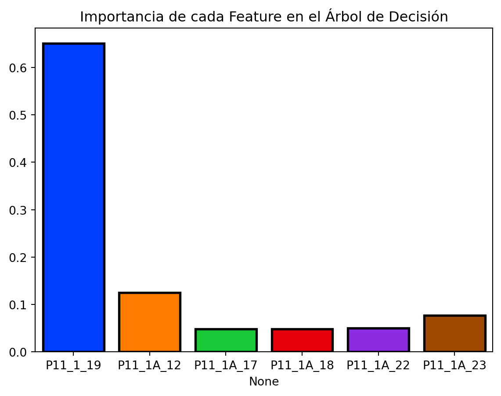

/home/barea/anaconda3/envs/investigacion/lib/python3.9/site-packages/sklearn/base.py:411: FutureWarning: The `_get_tags` method is deprecated in 1.6 and will be removed in 1.7. Please implement the `__sklearn_tags__` method.
warnings.warn(
4.3 Asegurar que no Haya Valores NaN o inf en los Datos de Entrenamiento y Prueba:
Se aseguran que no existan valores NaN o infinitos en los datos de entrenamiento y prueba.
Se predicen y evalúan los resultados del modelo de Árbol de Decisión.
Mostrar el Código
y_train_pred_tree = best_tree.predict(X_train)y_test_pred_tree = best_tree.predict(X_test)train_accuracy_tree = accuracy_score(y_train, y_train_pred_tree)test_accuracy_tree = accuracy_score(y_test, y_test_pred_tree)train_f1_tree = f1_score(y_train, y_train_pred_tree, average='micro')test_f1_tree = f1_score(y_test, y_test_pred_tree, average='micro')print('Accuracy en train (árbol de decisión):', train_accuracy_tree)print('Accuracy en test (árbol de decisión):', test_accuracy_tree)print("El f1 score en train (árbol de decisión): ", train_f1_tree)print("El f1 score en test (árbol de decisión): ", test_f1_tree)
Accuracy en train (árbol de decisión): 0.7116146062472504
Accuracy en test (árbol de decisión): 0.6815226689478187
El f1 score en train (árbol de decisión): 0.7116146062472504
El f1 score en test (árbol de decisión): 0.6815226689478187
5 Visualización de la importancia de las características en el Árbol de Decisión:
Se visualiza la importancia de las características en el modelo de Árbol de Decisión.
Mostrar el Código
importances_tree = best_tree.feature_importances_sns.barplot(x=X.columns, y=importances_tree, palette='bright', saturation=2.0, edgecolor='black', linewidth=2)plt.title('Importancia de cada Feature en el Árbol de Decisión')plt.show()
/tmp/ipykernel_26881/2873126456.py:2: FutureWarning:
Passing `palette` without assigning `hue` is deprecated and will be removed in v0.14.0. Assign the `x` variable to `hue` and set `legend=False` for the same effect.
sns.barplot(x=X.columns, y=importances_tree, palette='bright', saturation=2.0, edgecolor='black', linewidth=2)

6 Modelo de Ramdom Forest:
Mostrar el Código
import matplotlib.pyplot as pltimport numpy as npfrom sklearn.ensemble import RandomForestClassifierfrom sklearn.model_selection import train_test_splitfrom sklearn.metrics import accuracy_score, f1_score
6.1 Dividir el Conjunto de Datos en Entrenamiento y Prueba:
Se dividen los datos en conjuntos de entrenamiento y prueba.
Mostrar el Código
X_train, X_test, y_train, y_test = train_test_split(X, y, test_size=0.3, random_state=42)
6.2 Ajustar el Modelo de Random Forest:
Se ajusta el modelo de Random Forest con los datos de entrenamiento.
In a Jupyter environment, please rerun this cell to show the HTML representation or trust the notebook. On GitHub, the HTML representation is unable to render, please try loading this page with nbviewer.org.
RandomForestClassifier(random_state=42)
7 Predecir y Evaluar el Modelo:
Se predicen y evalúan los resultados del modelo de Random Forest.
Mostrar el Código
y_train_pred = modelo_rf.predict(X_train)y_test_pred = modelo_rf.predict(X_test)print("Accuracy en train:", accuracy_score(y_train, y_train_pred))print("Accuracy en test:", accuracy_score(y_test, y_test_pred))print("F1 Score en train:", f1_score(y_train, y_train_pred, average='macro'))print("F1 Score en test:", f1_score(y_test, y_test_pred, average='macro'))
Accuracy en train: 0.8713887666813316
Accuracy en test: 0.6593669803250641
F1 Score en train: 0.8716370666841465
F1 Score en test: 0.6435618001934287
7.2 Visualizar la Importancia de las Características:
Se visualiza la importancia de las características en el modelo de Random Forest.
Mostrar el Código
indices = np.argsort(importances)[::-1]plt.figure(figsize=(15, 6))plt.title("Importancia de cada Feature en el Random Forest")plt.bar(range(X_train.shape[1]), importances[indices], align="center")plt.xticks(range(X_train.shape[1]), feature_names[indices], rotation=90)plt.xlim([-1, X_train.shape[1]])plt.show()